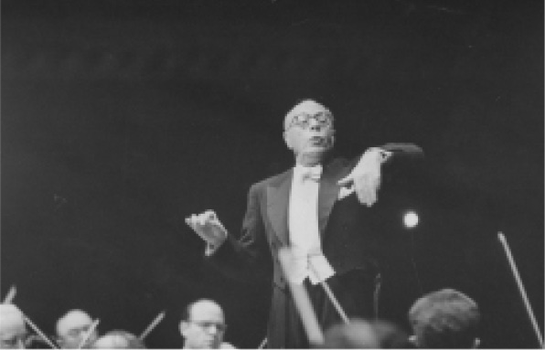

日记，8月8日
摘自罗恩·海布伦，《岛》
怒放的生命
咔嗒一声。吱吱吱吱！钓线以极快的速度从线卷释出。只听一声中气十足的吼叫：“鲯鳅鱼——”几秒钟后，另一支拖钓鱼竿也摆了出来，又一条钓线撒了出去。两条鲯鳅鱼上钩了。只要能钓到两条，就说明附近或许存在鱼群。（鲯鳅鱼与吞拿鱼类似，它们跟人们喜爱的哺乳动物海豚并没有什么关系。）大乔的双眼闪闪发光，他记录下海藻丛的位置，然后丢开舵盘，抓住其中一支钓竿，他的朋友马克则抓住另外一支。这是商业性捕鱼，并非业余消遣，所以渔具非常沉重，也没有时间可以浪费在戏耍猎物上。很快，两条20多磅重的大鱼被拖上甲板。小船掉转头去寻找新的猎物。活的鲯鳅鱼非常美丽，它们的色彩鲜艳夺目，金色、绿色和蓝色掺杂在一起，然而一经捕获，这种鱼便会迅速失去绚烂的色彩。有时，乔会为自己猎杀这种可爱的生物而感到一丝悔恨。但今天不会。眼下他全情投入，注意力高度集中在猎物上。当他们再一次成功钓上两条鲯鳅鱼时，乔发出欣喜的欢呼。
拖钓鱼竿又传来动静，钓线成功捕捉到更多鲯鳅鱼。“老天爷啊！钓线都热得烫手啦，而且……（此处听不清）”可以听出，渔夫们已经成功捕获几十条鱼，足够从中获得丰厚的利润。乔非常满意当天的成果，驾驶着他23英尺长的“海象号”渔船，开启了返航之路。“海象号”是一艘简朴的实用型小船，配有水星牌双排舷外发动机，采用开放式驾驶舱设计，所以并不适合胆小的人。此外，乔和他的同伴只能凭借罗盘和双眼来导航，常常深入墨西哥湾流离海岸40英里的地方渔猎——胆小的人绝对干不了这活儿。回家意味着首先只能以每小时6英里的速度缓慢地花几小时逆流而上，之后，渔夫要精准地找到自己的目标——一个水湾入口，说不定只有一英里宽。找到入口后，还必须穿梭于海岸边最危险的一段水域，通过油门和舵轮来避免被海浪侧面夹击或引起船身剧烈颠簸。同时，只要一不留神，小船就会被海浪的间隙吞没，整艘船瞬间倾覆。若真如此，你的尸体可能会让螃蟹们大快朵颐，饱餐一顿。
不过大乔·弗莱彻可是个中高手。在返家的漫长航行中，他一言不发、心无旁骛，全神贯注地观察着大海、天空和船。假如你问他当时有什么感受，他会回答“啥也没有”。他全身心投入眼前的工作中。经过水湾入口时气氛有些紧张，不过一旦小船驶入相对较为平静的海峡内水域，紧张的气氛便迅速烟消云散了。回到码头后，男人们一边清理鲯鳅鱼，一边喝着罐装啤酒，有说有笑，还跟同行和路人互相打趣。乔把一些鱼排分给马克，自己留了一些，剩下的将运往当地餐厅，在幸运游客的餐盘中作为夏威夷名菜“mahi mahi”出现。（当地人称这种鱼为“海豚鱼”，但有些食客很抵制这个名字。）
夜晚来临，乔和妻子帕姆打算出门散步，踱回码头，加入欣赏夕阳的人群。不过突然有朋友来访，于是一群人在他们家的门廊上度过了这个夜晚，不时传来的笑声伴随着蟋蟀的合唱、蛙声和蝉鸣。一小时后，又有一群路人加入这欢乐的聚会。有人拿出几把吉他，小乐队为夜间合唱团注入了独特的乐章。
乔的生活并非一帆风顺，他也曾经历情感问题和财务困难。不过现阶段，他的生活挺美好的。捕鱼生意非常稳定，再加上一些零散的木工活，负担家用不成问题。他不需要太多现金，毕竟房子是自己建的，一切维修工作都能自己搞定，修船和卡车也不在话下。通过和邻居以物易物，乔和妻子还能换到很多东西。
从里到外，乔都是一个响当当的汉子。他蓄着红胡子，身材高大，体形比常人略微魁梧一些，声如洪钟，与人交往颇为自信，气定神闲。他不轻易发怒，也不爱杞人忧天，毕竟人生中总会遇到问题，担心也没什么用。乔还是一个非常大气的人。他头脑机智，亲和爱笑，积极向上，充满活力。平时行事从不鲁莽，不以奸诈之心待人，是一个靠本事吃饭的独立男人。从一家本地的船坞离职后，乔更是将自己的本性发挥得淋漓尽致。整天对别人唯命是从的生活向来不合他的胃口，让他觉得自己渺小得很不自然。自由自在总比充当为五斗米折腰的工薪族要好，就算生活中缺东少西也没关系。大乔·弗莱彻是自由的，也充分感觉到自由。
你或许很快就会相信乔是一个幸福的人。但你是基于什么做出这个判断的呢？上文的所有描述都没有提到乔本人对这个问题的看法。你也可以想象，他说不定从来没有思考过这个问题。
在判断乔是否幸福时，就像在现实生活中判断某人是否幸福一样，我们依据的不是什么民意调查，而是直接观察这个人：他们的步伐是否轻快有活力？他们是否看起来神情紧张，无法放松？他们是否充满自信地做自己？他们是不是看起来“怪怪的”？他们爱笑吗？是不是很容易生气？是否稍有不顺便会崩溃大哭？
我认为，提出以上这些问题是为了尝试评估一个人的整体情绪状态 。“情绪”这个词或许有些误导，因为它代表着一种狭义的、以感觉为主的描述，如喜悦或悲伤、恐惧或愤怒。但紧张根本就不是一种情绪。你的仪态或步伐所表现出的“情绪状态”不同于某种单一的情绪，它要比情绪更深。
有时我们想跨越情绪表达词汇的限制，便讨论起精神或灵魂。想想人们常说的“她兴致高昂”，或者鲍勃·马利 [1] 如何恳求爱人来“满足我的灵魂”。不过我觉得这些例子中依然牵涉到广义上的情绪问题，所以我会继续沿用“情绪状态”这个词。
假如这个想法正确的话，那么我们日常生活中大部分时候想到的幸福，指的就是一个人的情绪状态。也就是说，幸福就是指拥有良好的情绪状态 。我们把这个称作关于幸福的情绪状态理论 。
现在我们已经有一个对幸福的定义了。这个定义好吗？我们可能没办法拿出单独一个定义，说这就是 正确答案。但我认为在思考有关幸福问题的过程中，这是一个有用的定义。它能帮助我们理解为什么人们如此看重幸福，为什么家长会希望自己的孩子长大后“幸福和健康”。我会简单论述一下为什么在几个主要理论中我更偏好这一个，但不会深入讨论。我要说明的是，尽管很多人都更倾向于从情绪状态的角度来理解幸福，但我在本书中描述的并不是所有人的共识。其他理论一样拥有广大受众。
幸福的三个方面
让我们来进一步探讨这种幸福观。幸福到底包括哪些方面？当人们从情绪角度来思考幸福时，他们往往会想到一种特定的情绪：感到快乐。由于这种联想威力巨大，以至于人们常常以为幸福只是狭义地指代开心的感觉，或者一切可以用“笑脸”表达的感觉。这种对于幸福的理解非常肤浅，因为获得 幸福比感到 快乐要复杂得多。
回想一下你一生中最幸福的时期。排除那些为数不多的、因为某件人生大事而欣喜若狂的日子，比如喜获麟儿等，主要回忆那种更为细水长流的幸福。并不是每个人都有这样的经历，但假如你有，我想那应该跟前文描述的大乔·弗莱彻的生活很像，或是跟我与父亲的照片（图2）中那种状态很像——你能够全身心沉浸在你热爱的事物中，充分发挥你的自我，并且无忧无虑地做自己。你会感到精力充沛、活力十足，与此同时却又安稳平和，没有怀疑、没有焦躁、没有犹豫。而且，你还能时常感到快乐，说不定还会笑口常开。但这些感觉并不是最重要的。
图2 作者与父亲一同航行
我们可以把幸福分成三大方面来帮助分析。可以说，每一方面都对应了情绪状态在我们生活中的不同功能。不过在本书中，我就不进一步论证这种对应为何成立了，而是直接展示这种观点。
我们可以把幸福当作一种对于自己人生的情绪评估。对于某些方面的评估会比其他评估更加基本。最基础的幸福指的是你对于个人安全和保障程度的反应，也就是说，你究竟是降低警戒、充分享受人生，还是对这个世界充满戒备。我将这种状态称为人与自己的人生达成协调 。接下来，我们要研究的是人对于自己在自身处境中的参与 程度的回应，即你是否认为自己应该在周遭活动中投入大量精力，又或者你认为退出或淡出这些活动才是更明智的选择？最后，我们要研究的是代表认可 的情绪状态，假如你认可自己的人生，就说明你的生活是美好的。人们常犯的错误就是以为所有的情绪状态都体现了对人生的认可。
幸福的这三个方面都很重要，不同的人生理想所强调的是幸福的不同方面。举例来说，美国人更重视认可和参与，与之对应的情感状态就是喜悦与兴奋；而亚洲文化所侧重的则是协调所带来的幸福感。
认可：感受快乐以及其他典型情绪
让我们先来看看幸福最为人熟知的一个方面——认可 。最显而易见的例子就是喜悦和悲伤这两种感情。我们不难理解这两种状态为何会与幸福产生如此紧密的联系，因为它们时常与得到和失去、成功和失败同时出现。
但我们也很容易过分强调这些情绪的重要性。尽管促使我们产生快乐情绪的场合非常重要，但快乐的产生很有可能只是个例而非常态，哪怕对生活最幸福的人来说也是如此。而且这种情绪不会维系很久。例如，你会很享受坐拥一大笔财富的快感，随后很快回归到正常生活中。如果我们太注重这种感受，那么就会产生一种既定印象，认为幸福不过是一些快速消散的短暂情绪，最终我们还是会回到性格中与生俱来的开心“设定值”（参见第五章）。
不过我们也不能全然忽视认可所代表的这一类幸福。总体来说，开心快乐肯定比垂头丧气要好。假如不能时常欢笑，生活将死气沉沉。大家常说的“感到幸福”这个说法中蕴含的情绪种类之多出乎人们的意料。例如，我们不应该将喜悦与让人忍不住击掌相庆的兴奋混为一谈。恬静的喜悦应该是父母看着自己熟睡的孩子时体会到的感觉。与之相比，一个球迷看到自己心仪的球队刚刚进球得分时所体会到的那种欢欣雀跃虽然更为强烈，却可能没有前者那么令人感到快乐和满足。
参与：活力与心流
幸福的第二个方面体现了你在生活中的参与 程度，也就是看你究竟是感到无聊、无精打采、孤僻寡言，还是精力充沛、充满兴趣、全情投入。当你对自己的生活给予肯定时，简单地“点赞”是不够的，还应当满腔热忱地接受生活的馈赠。就算生活并不顺心，例如需要经过努力拼搏才能完成某项困难的目标时，你也能甘之如饴。
参与生活的形式有两种。第一种的核心是能量或活力 ，我们可以用兴奋——抑郁轴来衡量人们的表现。例如，一名充满激情、要求严苛的管弦乐团指挥，可能并没有明显表现出开心或快乐，却依然能达到兴高采烈甚至幸福的状态。我不清楚克利夫兰管弦乐团的著名指挥家乔治·塞尔是否符合这个描述，但很明显，他对生活充满激情，在他身上可以看到一种火花四溅的热忱（图3）。尽管他是一位严厉的上级，却不表示他没有获得幸福的权利。塞尔的幸福主要取决于他的脾气秉性到底是使他处于彷徨不安中无法自拔，还是一闪而过，对他的内在状态没有造成多大影响。

图3 克利夫兰管弦乐团指挥家乔治·塞尔
这种狂喜派的幸福代表了一种激情洋溢的生活方式，代表人物有尼采、歌德以及数不胜数的浪漫主义作家、艺术家。但普通人对这种充满激情的生活的追求没有必要像尼采那样极端。就像乔那样，许多人过着充满活力的美好人生，并不需要经受巨大的痛苦。
第二种参与形式体现在亚里士多德的作品中，现代心理学家米哈里·契克森米哈赖提出的心流 描述的也是同样的概念。心流指的是当你全身心投入一项活动，尤其是一项很有挑战性的活动中时，反而表现很好的状态。运动员和音乐家一般将这种状态称为“化境”。在心流状态中，你会失去一切自我意识，忘记时间的流逝，达到一种物我两忘的境界。这是一种令人非常快乐的状态，并且处于这种状态之中的人明显非常幸福。心流几乎可以说是无聊的反义词。
当人们陷入抑郁的时候，参与感便显得尤为重要。因为当一个人流露出倦怠、无精打采时，意味着他完全从精神层面丧失了参与生活的热情。这种抽离一直都非常糟糕，有时还会造成混乱。不过有时，抽离也能起到正面作用，因为它的出现表明我们或许不应该继续目前的生活方式，从而帮助我们脱离现有的生活常态，完成重大人生转折。
协调：内心宁静，自信，情绪开朗
要理解幸福的第三个方面，我们可以想象它最常见的表现形式——宁静。现在似乎很少有人追求宁静这种状态。人们总是渴望获得娱乐和感官刺激，内心宁静则听起来非常无聊。“谢谢，给我一颗抗焦虑药帮我赶走焦虑就好，我这就走。”
但我认为，宁静或类似的状态才是我们获得幸福的基石。或许，有些人在缺乏宁静的情况下也能获得幸福，但这非常困难。要解释这一点，首先得弄清楚什么是宁静。我们可以将它当作一种“气定神闲”的感觉，它不仅仅是指内心平静或毫无波澜，还包括一个人对自己发自内心的肯定，或者说自信、稳定和平衡，即“泰山崩于前而色不变”。古希腊人称这种状态为“心平气和”，佛教徒则称之为“安乐”。在古代宗教和伦理思想中，这或许是人们最想达到的一种思想状态。
想想幸福的人看起来是什么样的。微笑意味着认可，神气活现的步伐体现了参与，放松自在的姿态呈现出宁静。这不仅仅是因为这个人没有受到困扰，也不为任何情感所困，还明显可以表现出当事人处于一种非常快乐的状态。保持宁静并不意味着一个人不能精力充沛或者兴奋狂喜，乔的例子已经证明了这一点。
让我们进一步拓展开来，思考一下宁静这一类心理状态代表了什么样的生理状态。当一个有机体生活在熟悉、安全的环境中时，它能够游刃有余地把握周遭环境，便会放低警觉，自信地追逐心中所想。我们所关注的便是人类能不能达到这种状态。斯多葛派曾经提出，当一个人处于这种状态时，他会发现非常熟悉 自己的生活。这个人会生活得非常自在，简直如鱼得水。
同样，设想一下当你跟家人或亲密的老朋友在一起放松时，你会是什么样的状态。你感觉跟这个人在一起非常轻松自如。当你从生理上处于一种自如的人生状态时，“宁静”就变成了一个狭隘的词，不足以描述你的情况。
我会把这种状态叫作协调 。在这种状态下，一个人会放松下来，富有魅力，自由自在地生活，不受任何限制。协调的对立面——不协调，不仅仅会给我们带来焦虑，而且更像疏离 。也就是说，你的环境对你来说显得有些陌生，你会感到不熟悉、有压迫、受威胁。你的自我保护意识会加重，焦虑、压力和不安全感铺天盖地袭来。协调主要表现在三个方面：
1. 内在平静（“宁静”）
2. 自信
3. 情绪或精神开朗。感到“轻松快乐”，或“不受压迫”。
“自信”在这里指的是一种情绪状态，而不是你对自己的看法。我们常说的“肉体自信”指的就是一个人自如的肢体动作能够体现出这个人是否自信，反例可以参见尼克松式笨拙的肢体语言。这位前总统的身体和思想表达的完全不是一个意思，简直就是笛卡尔身心二元论的典型。当尼克松朝天伸开双臂，两手同时比出V字，做出他那代表胜利的招牌动作时，假如你碰巧站在他的身后 ，你会立刻意识到，此刻在你眼前的不是一个真正幸福的人。与之相对，我们可以想象一名芭蕾舞者所展现出的运动员式的优雅，这才是正面的例子。
与大众熟知的既定印象相反，我们可以说协调才是幸福的核心。焦虑、压力、不安全感以及类似的状态不仅会让我们不快乐，还会剥夺我们感知幸福的其他方面的能力。在忍受这些不协调的状态时，你或许还是可以偶尔打起精神来，开心一下，但你很难达到兴奋、心流和快乐的状态。从直觉判断，如果一个人饱受折磨、焦灼紧绷、压力过大，那么不管他看起来有多开心，似乎都不可能是幸福的。他的人生并非自由自在。
在研究人类福祉的过程中，我们很容易忽视协调的重要性，因为它不像幸福的其他方面那样引人注意。以压力过大 为例，据说在当今文化中，压力无处不在，然而它并没有得到相应的重视。对于压力的担忧常常被人们当作有钱人琐碎的抱怨从而搁置一旁。这种态度并不稀奇，因为压力并不像背疼之类的肉体痛苦一样占据了我们全部的注意力。它更像一个不起眼的讨厌鬼，而不是什么大麻烦。
然而表象是具有欺骗性的，因为压力最可怕的后果并不是它直接给人类带来的折磨，而是对受害者的腐蚀。（你可能想象不到，我所说的腐蚀甚至有其字面意义，因为压力会在你的基因里留下永久的印记，提高人体未来患病的风险。甚至有充分证据表明，这些基因改变会遗传 给你的孩子，并且以后还会发生进一步基因改变，更别提长期承受压力会给大脑发育带来怎样的变化了。）
同时，压力还会压迫你的精神，磨平你的心智，扼杀你获得快乐的能力。压力过大的人从生活中所得更少，确实，对他们来说生命的意义 也在减少。因为他们的注意力变得狭隘，无法轻松享受，甚至无法注意到生活的馈赠。当我们压力过大时，活着的乐趣和缀满我们生活的种种微小的快乐都被彻底排除在外。所剩下的生活通常还可以勉强忍受，却不那么值得拥有。
不久前，一个冬日清晨，世界上最顶级的小提琴演奏家之一——乔舒亚·贝尔，在华盛顿特区的一个地铁站拿出他的斯特拉迪瓦里小提琴，为来去匆匆的上班族贡献了长达43分钟的专业大师级演出。其间有1097个路人经过他的身旁，其中不乏定期花100美元买票去音乐厅听他演奏的人。事实证明，完全没有必要担心现场会被围得水泄不通，因为几乎每个人都彻底无视这位音乐家，只有七个人停下脚步，聆听片刻。
一个平时不太喜欢街头演奏的巴西裔擦鞋匠表示：“如果在巴西街头发生同样的事情，所有人都会来围观的。但这里不会出现那种场面。”她还说：“人们径直走上电梯，目光直视前方。少管闲事，眼朝前看。每个人都压力很大。你明白我的意思吗？”一名《华盛顿邮报》的记者据此写出一篇题为《早餐前的珠玉之声》的文章，标题非常贴切。唯一一个认出贝尔的行人对这名记者说：
这些忙碌、不协调的行人中大部分都物质条件优渥，然而从某些层面来说他们非常贫穷。在这个例子里，他们是时间上的穷光蛋，这反过来会导致他们的生活中缺乏美和奇迹。这可不是一个可以忽略不计的损失。还记得本书开头皮拉罕人是怎么说的吗？当传教士请他们解释为什么会有人探访他们时，给出的第一个理由就是美。
幸福隐藏的一面
我们对于幸福的描述还不算完整。目前为止，我们只讨论了人们能够感受或体验到的几类幸福。但是幸福远不止于此。我们来虚构一个人物罗伯特，看看他的例子：
总体来看，罗伯特所经历的快乐和不快乐的情绪比例，也就是他的“享乐平衡”，似乎明显倾向快乐那一边。但是他幸福吗？
在我问到的人中几乎没有一个认为罗伯特是幸福的。在39位读到这个案例的学生当中，只有一个人认为他幸福，大部分人都回答“非常不幸福”。我请约半数学生解释他们的答案，只有一个人表示，实际上，罗伯特的经历整体来看很不快乐。以微弱优势胜出的最常见的解释是这样的：“内心深处，罗伯特的情绪状态很糟糕。”
这个结果非常有趣。很明显，即便你平时自我感觉挺好，但还是有很多人认为你有可能在情绪上处于不幸福的状态！这到底是怎么回事？根据历史悠久的心理学理论解释，很大一部分心理幸福感是无意识的 。按照这种说法，很多困扰我们的事情其实都潜藏在我们的意识深处。尽管我们常常把这种想法跟弗洛伊德和他的追随者联系在一起，但你不需要信奉弗洛伊德的理论，也可以理解无意识状态在人类幸福感中所扮演的重要角色。确实，如今几乎每个人都已经顺理成章地接受了这个想法，也由此催生了数之不尽的电影和小说人物。在这些作品中，他们的幸福人生只是一个幌子，掩藏了郁积已久的苦闷和不幸，只待合适的契机爆发。举例来说，在电影《美国丽人》中，爽朗活泼的房产经纪人卡罗琳·伯纳姆举止阳光大方，但她的家人中没有一个会因此就认为她很幸福。她看似明媚的笑容下，隐藏着日积月累、溃烂化脓的痛苦伤痕，她迟早会爆发的（图4）。
在罗伯特的案例中，他工作时表现出的积极向上掩盖了深层的失调，全靠忙碌加以抑制才不致失控。尽管从表面上来看，他的情绪状态是积极向上的，他本人却绝不 快乐。他是一个不幸福的人。
幸福似乎不只囊括人们可以体验到的各种情绪和心情，还包括我们在无意识 情况下经历的情绪状态。那么后者究竟意味着什么呢？可能我们需要假定一些无意识状态下的心情和情绪。我不确定目前在该精神研究领域的知识是否足够让我们自信地发表见解。或许重点在于，在罗伯特之类的案例中，当事人更倾向于 体验某些心情和情绪。例如，有时可能只需要再加上一根稻草的重量，人们就会变得焦虑不安。也有可能一个人整体来说心情不错，但常常很容易被激怒或感到沮丧。仅仅是这种倾向于产生消极情绪的特质就会阻碍我们获得幸福。
图4 安妮特·贝宁在电影《美国丽人》中饰演的卡罗琳·伯纳姆
我们把幸福的这个层面叫作一个人的心情倾向 。也就是说，在相同情况下，某些人会更倾向于体验某些特定的心情和情绪。一个人的脾气秉性大致上是固定的，然而他的心情倾向却会随着生活状况发生改变。罗伯特这类案例表明，心情倾向是影响人类幸福感的重要因素。一般来说我们不太重视幸福的这个方面，因为心情倾向会朝我们体会到的感觉看齐。不过有时也不尽然。举例来说，一个男人正在哀悼他不久前离世的爱妻，为了振作起来，他可能会用琐事来分散自己的注意力，如看看电影、玩玩扑克。但他的密友不会因此就认为他很幸福，因为他的镇定和积极都是表象，随时可能消失，转化为焦虑或泪水。
作为情绪幸福感的幸福
那么现在我们可以认为幸福由两部分组成：你的情绪和心情，还有你的心情倾向。这两部分合在一起，构成一个人的情绪状态。也就是说：
我们可以把幸福粗略地看作焦虑和抑郁的反义词，或是心理学家常说的情绪幸福感 。考虑到这个专业术语已经有一定传播度，那么接下来我会常常使用“情绪幸福感”来指代“幸福”。
假如以我的学生的反应为参考，罗伯特的案例中有一点非常有趣，那就是几乎没有人提到关于幸福最流行的理论之一——享乐主义 。享乐主义者认为，幸福意味着你的快乐体验多于不快乐的体验。享乐主义理论远比情绪状态理论更广为人知，或许是因为人们以为这两种理论之间没有差别。
但就像“罗伯特”的案例所体现的，这两种理论其实并不一样。人们似乎承认罗伯特的经历大部分是快乐的，但是从情绪方面来看，依然会认为他并不幸福。假如人们是以无意识状态作为依据来判断罗伯特并不幸福，那也就是说，享乐主义理论并不是 人们的判断依据。从定义上来说，无意识状态并不是亲身经历，所以它们也不可能给人们带来快乐或不快乐的体验。
事实上，这两种理论之间的鸿沟颇深。按照享乐主义理论，只要你的一段经历足够快乐，你就是幸福的。幸福就是一连串快乐的经历。而根据情绪状态理论，幸福意味着你拥有某种特定的心理状态 。衡量一个人是否幸福，就要试图找出这个人的基本情绪取向或行为举止，即从情绪角度来说，他对生活的回应是否积极？假如一个人幸福的话，那就意味着他从情绪上认可自己的生活。
我的同事马蒂厄·里卡德是幸福研究领域的顶尖佛教思想家，他用以下文字表述了一个非常类似的观点：“当我说到‘幸福’这个词的时候，我指的是从一个非常健康的大脑中产生的一种强烈的心盛感。这不仅仅是一种令人心情舒畅的感觉、一种短暂的情绪、一种心情，还是一种最理想的存在方式。”而且这种存在方式“决定了我们人生中每时每刻的质量”。里卡德本人（图5）就是一个很好的例子。众人交口称赞，都说他是一个极其幸福的人，我也这么认为。
图5 佛教僧侣马蒂厄·里卡德和他的朋友
你不用认可我所提出的幸福的三个方面，也不用同意我指出的幸福的无意识状态，不过你还是可以接受幸福的情绪状态理论这一基本观点。假如从不同的角度来思考我们的情绪状态，你或许会更喜欢情绪状态理论的其他版本。有些读者则可能更喜欢另一套理论，如生活满意度理论。接下来我们就来看看这个理论。